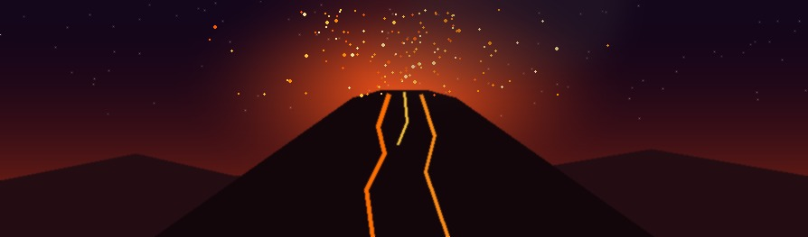

VULKÁNOKAz Etna Európa legmagasabb és egyik legaktívabb működő vulkánja, Szicília keleti partján emelkedik. Rétegvulkán, magassága a kitörések miatt folyamatosan változik. A környékén élők „Mongibello” néven is emlegetik, ami a hegyek hegyét jelenti.
Egyik legpusztítóbb kitörése 1669. március 11-én kezdődött, lávája elérte Catania városát, és annak egy részét elpusztította. Az Etnát 2013. június 21-én vették fel az UNESCO világörökségi listájára.
A Vezúv a Nápolyi-öböl partján álló rétegvulkán, Európa szárazföldjének egyetlen olyan vulkánja, amely az elmúlt száz évben kitört. A környékén ma is több millió ember él, ezért a világ egyik legveszélyesebb vulkánjának tartják.
A hagyomány szerint 79. augusztus 24-én tört ki, és hamuval borította be Pompeji és Herculaneum városát. A kitörést ifjabb Plinius írta le, róla nevezték el a heves, robbanásos kitöréseket pliniusi típusúnak. Legutóbb 1944. március 18-án tört ki.
A Fudzsi Japán legmagasabb hegye és egyben az ország jelképe. Szabályos kúp alakú rétegvulkán, csúcsát az év nagy részében hó borítja. Tiszta időben Tokióból is látható.
Utolsó kitörése 1707. december 16-án kezdődött, ekkor a hamu Edo (a mai Tokió) városát is beborította. A hegyet 2013. június 22-én kulturális helyszínként vették fel az UNESCO világörökségi listájára.